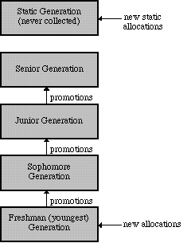

In garbage collector parlance, Sport Model can be described as a hybrid generational, mark and deferred sweep, mostly copying garbage collector with an integrated malloc/free system. However it goes farther than that in that numerous subtle and interacting details factor into a coherent and efficient system. The design goals of Sport Model, simply stated, are:
Circular references: The Java language requires all objects not reachable from a set of VM roots to be automatically freed. Some garbage collection schemes, notably reference counting, cannot reclaim circular chains of otherwise unreferenced objects. We can rule out this class of garbage collection algorithms.
Finalization: An object's finalize method must be run whenever no more references to the object can be found, but before the object's memory is freed. In addition to basic object finalization, the Java VM requires the ability to finalize all remaining finalizable objects on system shut-down.
Weak references: The sun.misc.WeakRef class requires weak reference support. Weak references are like normal references to objects, except they do not factor into liveness considerations. If no other reference to an object can be found except a weak reference, the Java language requires the weak reference to be set to null. Weak references are useful in implementing caches.
Support for JNI: The Java Native Method Interface (JNI) allows for code written in C and C++ to interact with the Java VM. JNI specifies that all local object references given out to native code and held on the C runtime stack must be retained and not garbage collected. This may be implemented by either employing a conservative garbage collection technique, retaining any objects that are potentially referred to by ambiguous stack references, or by introducing a level of indirection between local references and the objects to which they refer.
Although conservative garbage collection is not strictly required by JNI, the way in which array elements are manipulated also factors into whether it is an appropriate implementation technique. The GetArrayElements operation must be called to obtain a native vector of elements, and the ReleaseArrayElements operation must be called when the native code is done manipulating the contents. One of two implementation strategies may be used for these operations:
If copying collection is employed, the garbage collector would need the ability to pin array objects when their contents are given out to native code. Sport Model does indeed support copying (for reasons described below) and consequently it also supports pinning.
Per-object hash-codes and monitors: Java requires all objects to support hash-codes (per-object unique IDs used for hashing purposes) and to support monitor operations. These can be supported by storage extrinsic to the object (e.g. a monitor cache) or by allocating fields for them within the object itself.
Adding fields to every object for these seldom-used operations can be very costly in terms of space. Data was taken in Communicator while visiting numerous pages containing applets, and the following graph of numbers of objects distributed by size was produced:
From this graph we can see that most objects are small, and the percentage cost of per-object fields is high (moreover, this graph shows skewed results due to the 2 word (8 bytes on a 32-bit machine) object-handle overhead used by our current VM). A clever design by the Electrical Fire team can reduce both the monitor and hash-code overhead to a single word per object. Nevertheless, this can be all be handled external to the garbage collector and is therefore not dealt with directly by Sport Model.
From these graphs we can see that a very large percentage of objects become garbage almost immediately -- indeed before the next object is created. This data supports the generational hypothesis which states that the probability that an object will become garbage is inversely proportional to the number of collections it has survived, i.e. that newly created objects are highly likely to be temporary.
A technique known as generation scavenging attempts to exploit this statistic by partitioning the heap into a series of generations, and promoting objects from generation to generation as they survive some number of collections. This allows long-lived objects to be examined much less frequently by the collector, minimizing the working set of objects which must be examined by the collector, and thereby minimizing the amount of time spent collecting. The organization of generations can be depicted as follows:
Although copying garbage collection is a simple and effective technique for both partitioning the heap into sub-heaps, and maintaining the set of visited objects which must be retained for a collection, it has the negative effect of requiring additional heap space during the course of a collection. The set of old objects must be retained until the copying is complete as well as enough space for the newly made copies. Generation scavenging minimizes this impact by usually focusing on a single generation, but in the worse-case scenario as much as twice as much heap space is required. Obviously this can fail for data-intensive applications running under low-memory conditions.
For Sport Model, the hybrid nature of its collector comes to the rescue during these low-memory conditions. Objects which cannot be copied are simply left in place and marked instead, just as are objects referred to by conservative roots. This allows for near-100% memory utilization, modulo fragmentation concerns which will be discussed below.
When the counter exceeds some predetermined value, the object may be promoted. However, this leads to additional storage in the object for the counter, and is more expensive during the collection process. The counter must be incremented and tested for each live object.
Sport Model uses a low-overhead technique to determine when an object should be promoted. Two versions of the collection algorithm are used: a mark-and-sweep version that is performed most frequently, and a copying version that is used far less frequently. The mark-and-sweep algorithm has no concern for whether it is time to promote an object or not. It is fast and low-overhead. After N uses of the mark-and-sweep algorithm, a copy cycle takes place. The copying algorithm is then used which will promote some objects to the next generation.
In order to not promote objects which were created just before the copying algorithm is run, a bit is used in the object header to indicate that at least one copying cycle has already transpired for the object. When it is time to copy the object, if that bit is not set, it sets it and leaves the object in place in the current generation. If the bit is set, the object is copied and the bit is cleared in the copy in the new generation. This ensures that the object has lived between N and 2N collections, a sufficient criterion for promotion to the next generation. The parameter N may be tuned dynamically by the system (although currently fixed at 4 for the current implementation).
Sport Model is further optimized for level-two cache concerns in that it stores all object headers together on pages wholly dedicated to object headers, and minimizes them to one byte per object. Objects are associated with their corresponding headers by calculating the index of an object on its containing page (pages contain objects all of the same size). The index is used to obtain the object header in the object header array associated with a page descriptor for that page. Although the cost of looking up the object header is greater than just accessing the first word of the object as is done in most systems, it is relatively inexpensive as the division is performed by a table-lookup algorithm, and saving occurs because of the effects of increased locality of reference on the level-two cache.
Although Sport Model currently makes no provision for multiprocessor environments, it is possible with some minor rearchitecting to allow for multiple youngest generation sub-heaps, one per processor. This would allow Java threads assigned to different processors to allocate objects independently, without sharing a global lock on the sub-heap, and allow the youngest generation for each processor to be collected independently. Only when a copying collection occurs (which is far less frequent) would a lock need to be obtained on the globally shared second generation sub-heap.
One consideration with this sort of architecture is that additional rules would come into play about passing pointers between threads running on different processors. Because the write barrier works by recording modified pages and then uses this information to search for older objects that point to younger ones, modifications would have to be made to accommodate pointers made between youngest generations associated with different processors. This should be doable with only a minor additional penalty at garbage collection time.
This multiprocessor work has not been done due to lack of support for multiple processors in the low-level thread runtime system (NSPR).
